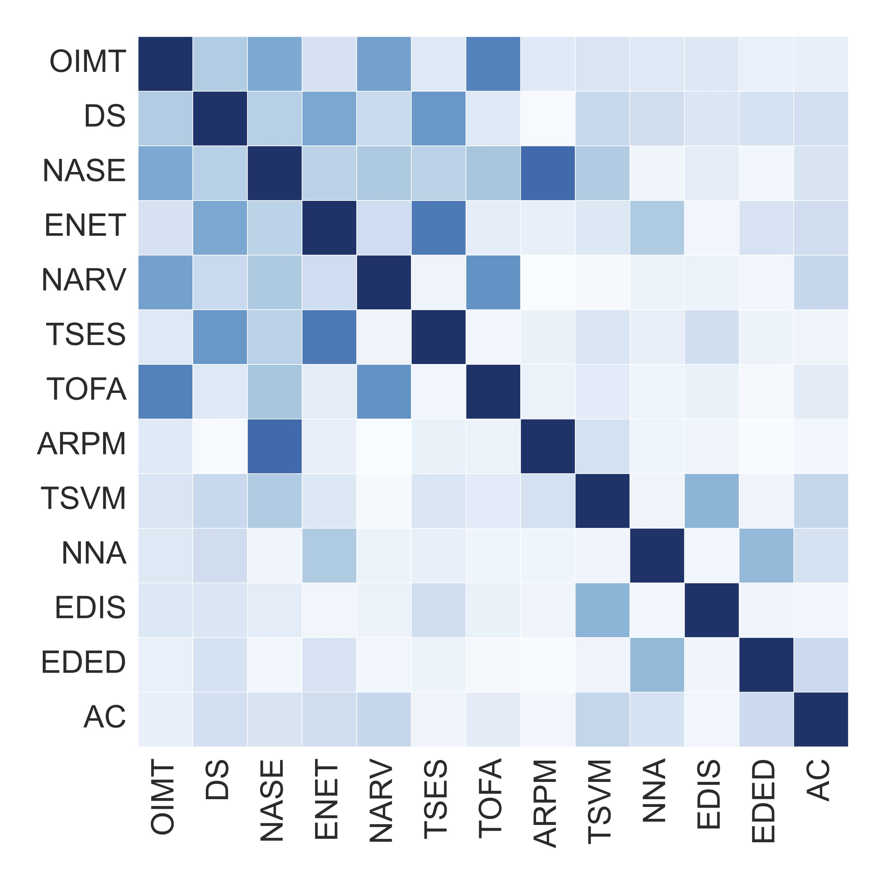
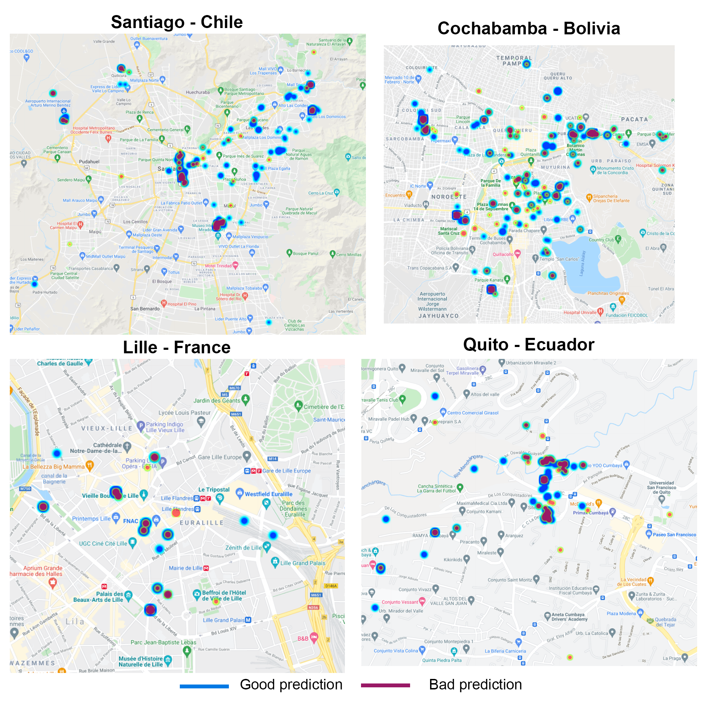
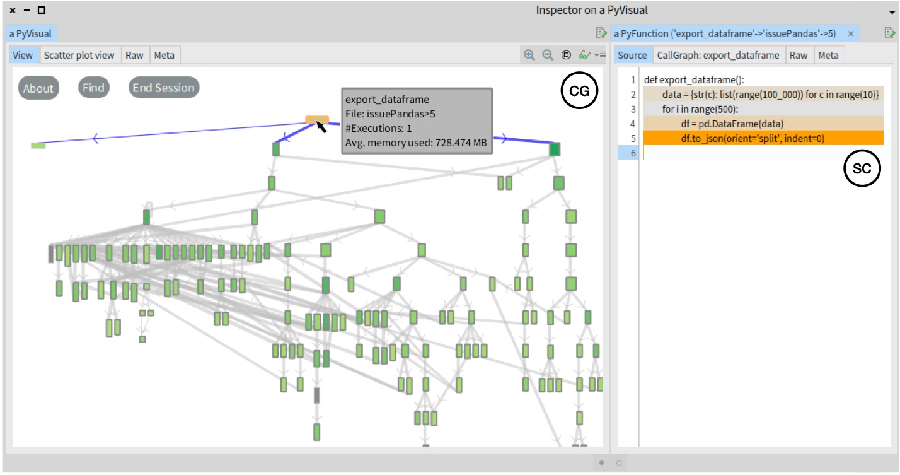
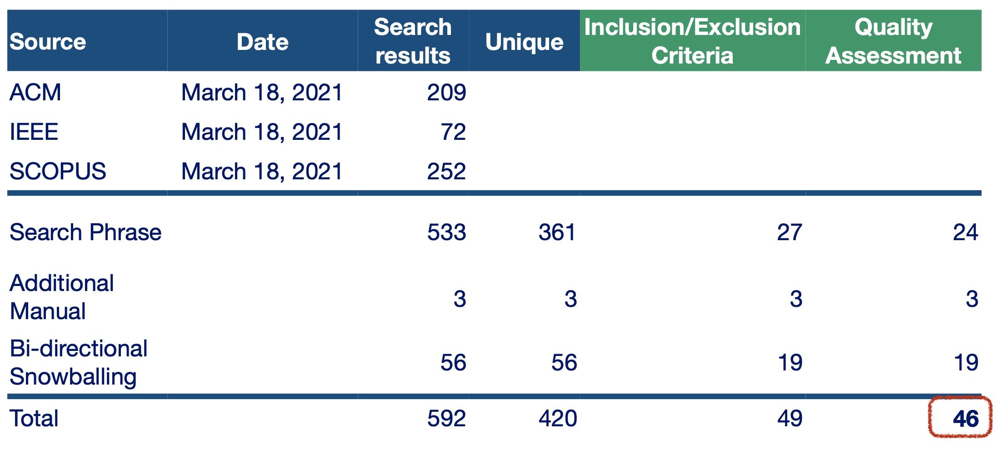
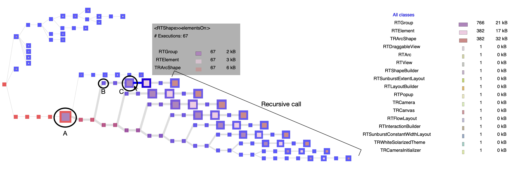
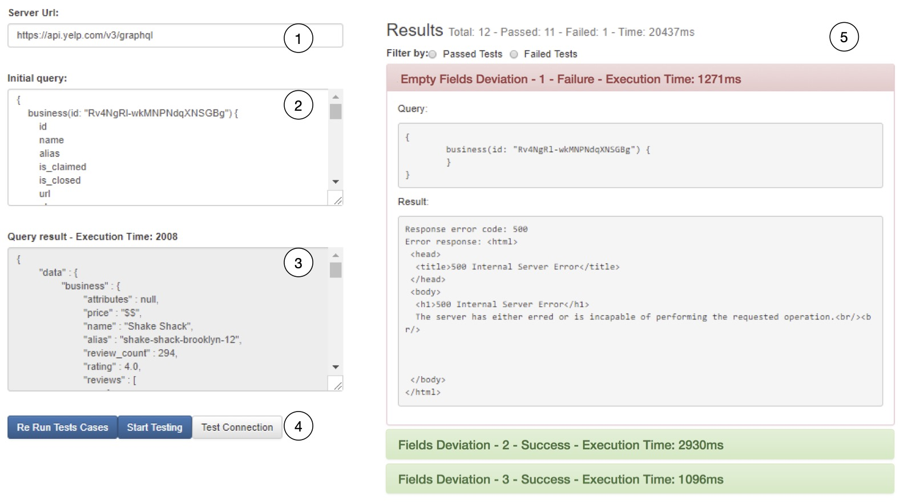
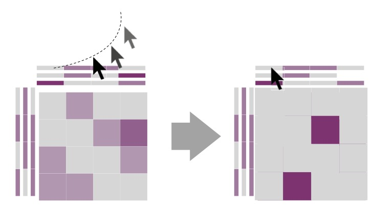

About me
I'm a part-time professor at the Pontificia Universidad Catolica de Chile and member of the part of the Software Engineering & Intelligent Systems laboratory (SEIS Lab).
Research interests
I'm interested in creating tools and techniques that help programmers develop and maintain software applications. Also, I enjoy evaluating tools through empirical evaluations with developers.
My research interests center on software engineering, specifically in the fields of software visualization, performance, maintenance and evolution, testing, mining software, and empirical evaluations.
Experience
I'm a part-time professor at the Pontificia Universidad Catolica de Chile and member of the part of the Software Engineering & Intelligent Systems laboratory (SEISLab).
In 2023, I obtained a Ph.D. degree in Computer Science at the University of Chile. From 2018 until 2022, I was a member of the Intelligent Software Construction laboratory (ISCLab) at the University of Chile.
In 2017, I worked on Semantics S.R.L. doing software development tools and research on software comprehension, testing automatization and languages. Previously at midyear of 2017, I obtained the Informatic Engineer degree at the Universidad Mayor de San Simon, Bolivia, with my project of visualization of software evolution supervised by Alexandre Bergel.
My CV is available online.
Programming languages preferences
-
Smalltalk
90% -
Java, Python
85% -
Haskell, Ruby
75% -
Scala, C++
70%
Publications
2023
-

A manual categorization of new quality issues on automatically-generated tests. Geraldine Galindo-Gutierrez, Maximiliano Narea Carvajal, Alison Fernandez Blanco, Nicolas Anquetil, Juan Pablo Sandoval Alcocer. IEEE International Conference on Software Maintenance and Evolution (ICSME '23) (to appear)
-

DGT-AR: Visualizing Code Dependencies in AR. Dussan Freire-Pozo, Kevin Cespedes-Arancibia, Leonel Merino, Alison Fernandez-Blanco, Andres Neyem and Juan Pablo Sandoval Alcocer. IEEE Working Conference on Software Visualization (VISSOFT '23) (to appear)
-

An Empirical Study of Mobile Code Offloading in Unpredictable Environments.
Pablo Sanabria, Andres Neyem, Juan Pablo Sandoval Alcocer and Alison Fernandez Blanco. IEEE Access, vol. 11, pp. 69263-69281, 2023
2022
-

Visualizing Memory Consumption with Vismep.
Alison Fernandez Blanco, Alexandre Bergel, Juan Pablo Sandoval Alcocer, Araceli Queirolo Cordova. IEEE Working Conference on Software Visualization (VISSOFT '22) -

Software Visualizations to Analyze Memory Consumption: A Literature Review.
Alison Fernandez Blanco, Alexandre Bergel, Juan Pablo Sandoval Alcocer.ACM Computing Surveys
2018
-

Effective Visualization of Object Allocation Sites.
Alison Fernandez Blanco, Juan Pablo Sandoval Alcocer, Alexandre Bergel. Proceedings of 6th IEEE Working Conference on Software Visualization (VISSOFT '18) -

Deviation Testing: A Test Case Generation Technique for GraphQL APIs.
Daniela Meneses Vargas, Alison Fernandez Blanco, Andreina Cota Vidaurre, Juan Pablo Sandoval Alcocer, Milton Mamani Torres, Alexandre Bergel, Stéphane Ducasse. Proceedings of International Workshop on Smalltalk Technologies (IWST '18) -

A Domain-Specific Language to Visualize Software Evolution.
Alison Fernandez Blanco, Alexandre Bergel. Information and Software Technology (IST)